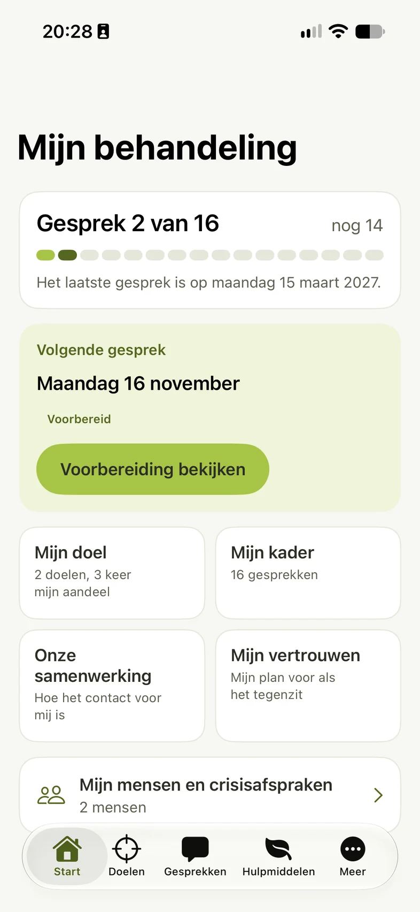
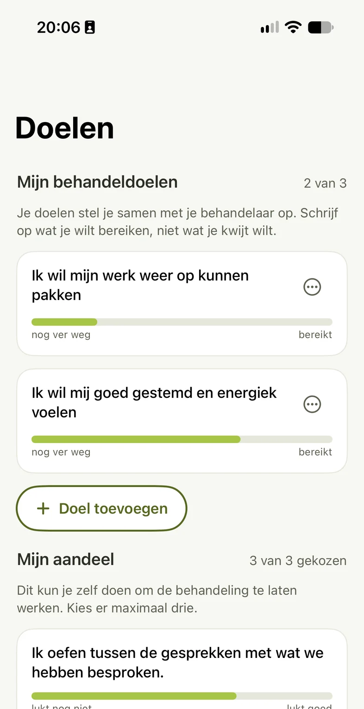
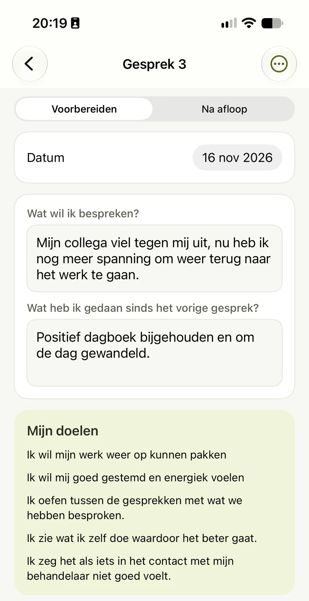
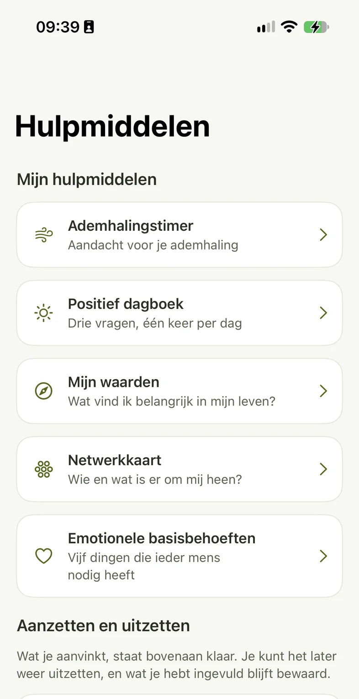
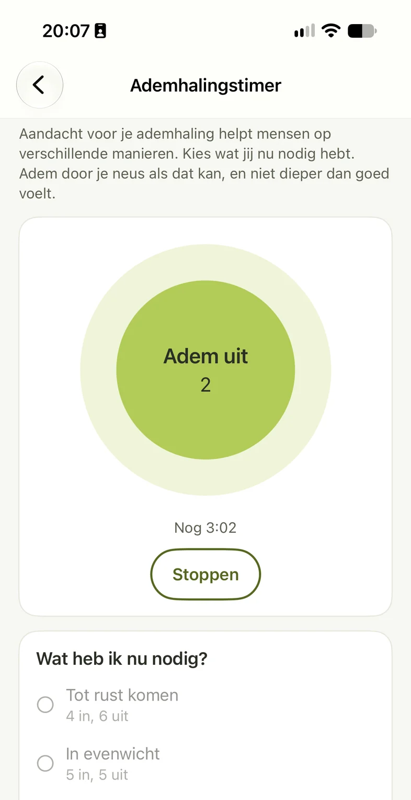
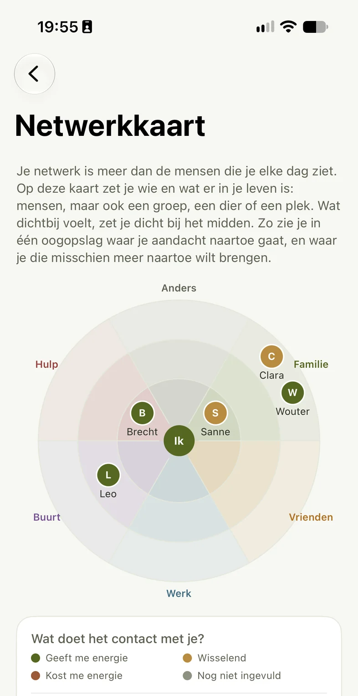
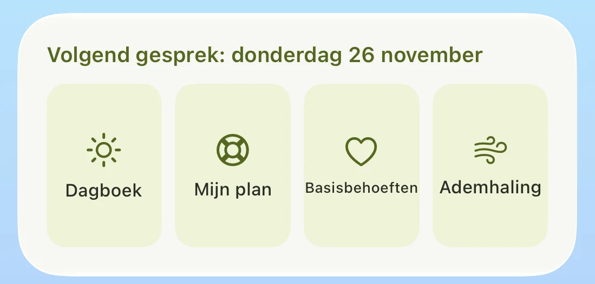

Alles wat je aandacht geeft, groeit.
Geef je behandeling de aandacht die ze verdient.
De Kracht van Aandacht is een app voor iedereen die in behandeling is bij een psycholoog of therapeut. Je houdt bij waar je aan werkt, bereidt je gesprekken voor en kijkt terug op wat er verandert.


Doelen
Weet waar je aan werkt
Schrijf in je eigen woorden op wat je wilt bereiken. Kies daarnaast wat je zelf wilt doen in je behandeling.
Gesprekken
Kom voorbereid naar je gesprek
Noteer vooraf wat je wilt bespreken. Schrijf na afloop op wat je wilt onthouden en wat je hebt afgesproken.

Hulpmiddelen
Kies wat bij je past
Een ademhalingstimer, een positief dagboek, je waarden, je netwerk en je basisbehoeften. Je zet alleen aan wat je wilt gebruiken.



Widget
Alles binnen één tik
Met de widget op je beginscherm zie je wanneer je volgende gesprek is. Met één tik open je een hulpmiddel. Welke dat zijn, kies je zelf.

Van jou, en van niemand anders
Alles wat je schrijft blijft op je eigen toestel.
Op je eigen toestel
Er wordt niets naar ons of naar anderen gestuurd.
Geen account
Je hoeft niet in te loggen en er wordt niets bijgehouden.
Jij bepaalt wat je deelt
Je behandelaar ziet alleen wat jij zelf deelt.
De app is een hulpmiddel naast je behandeling.
Hij vervangt je behandeling niet en is geen crisishulp. Bel bij direct gevaar 112. Denk je aan zelfmoord? Bel 113 of gratis 0800-0113, of chat via 113.nl.